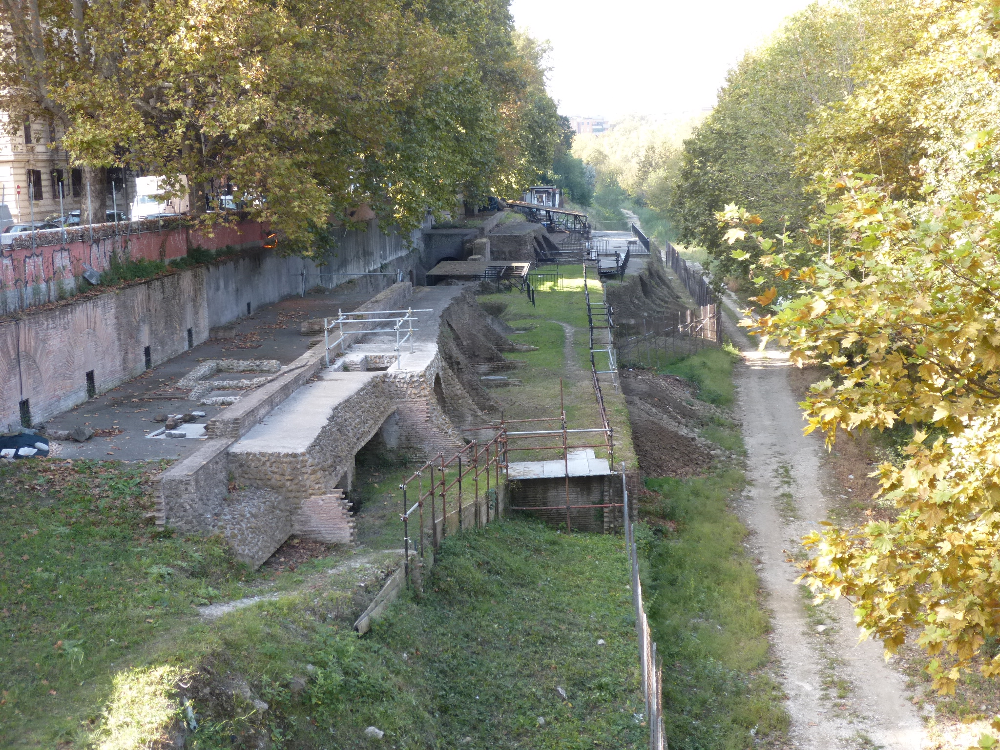
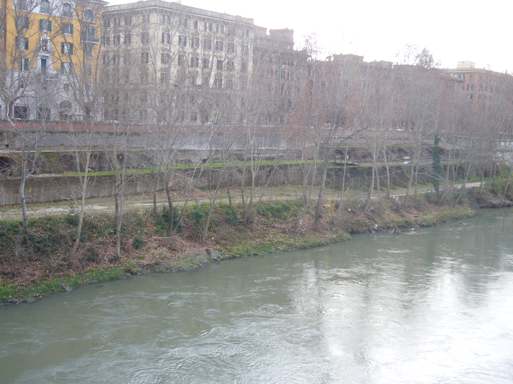

Conheça a história dos empórios:
Empório (em latim: Emporium) era o porto fluvial da Roma Antiga, construído aproximadamente entre o monte Aventino e o moderno rione Testaccio de Roma, cujo nome é uma referência ao monte Testaccio ("Monte das ânforas quebradas" em italiano), uma elevação artificial resultante do lixo produzido no porto.

História Desde o começo do século II a.C., o forte desenvolvimento econômico e demográfico tornou o antigo porto no Fórum Boário completamente obsoleto, com o agravante que ele não podia ser expandido por causa das colinas vizinhas. Por isso, em 193 a.C., os censores Lúcio Emílio Lépido e Lúcio Emílio Paulo criaram um novo porto numa área livre perto dos limites da cidade, ao sul do monte Aventino. Juntamente com o porto, foi construído o grande galpão conhecido como Pórtico Emília.
Em 174 a.C., o Empório foi pavimentado com pedras, dividido por paredes e ganhou escadas que desciam até o nível do Tibre, onde ficava o local de embarque e desembarque das mercadorias e matérias-primas (principalmente mármores, trigo, vinho e azeite) que chegavam do porto marítimo de Óstia Antiga e subiam o rio em grandes balsas puxadas por búfalos. Por séculos, os fragmentos das ânforas, utilizadas para carregar e armazenar líquidos, foram sendo empilhados no local e acabaram criando a ainda visível colina de cacos. Estima-se que haja mais de 25 milhões de ânforas no local.
Na época de Trajano, novas estruturas em opus mixtum foram construídas e a planície do Testaccio foi sendo gradualmente coberta por galpões, especialmente para artigos alimentícios, especialmente depois que as distribuições gratuitas de trigo e outros alimentos começaram, a partir da época de Tibério e Caio Graco (Hórreo Semprônio, Hórreos de Galba e outros).
O porto foi escavado pela primeira vez entre 1868 e 1870 durante as obras de canalização do Tibre e, novamente, em 1952. Atualmente há poucas ruínas visíveis, amuradas pelas paredes do Lungotevere Testaccio: um cais com 500 metros de comprimento e 90 metros de largura, com degraus e rampas levando ao rio, no qual se destacam grandes blocos de travertino com buracos utilizados para prender os navios, muito similares — embora não tão bem preservados — com os existentes no porto romano de Aquileia.
Com o desenvolvimento do moderno rione Testaccio, diversas ruínas de galpões foram reveladas, entre elas o túmulo do cônsul Sérvio Sulpício Galba, um dos túmulos individuais mais antigos que se tem conhecimento na cidade (Hórreos de Galba).
Na época de Trajano, novas estruturas em opus mixtum foram construídas e a planície do Testaccio foi sendo gradualmente coberta por galpões, especialmente para artigos alimentícios, especialmente depois que as distribuições gratuitas de trigo e outros alimentos começaram, a partir da época de Tibério e Caio Graco (Hórreo Semprônio, Hórreos de Galba e outros). O porto foi escavado pela primeira vez entre 1868 e 1870 durante as obras de canalização do Tibre e, novamente, em 1952. Atualmente há poucas ruínas visíveis, amuradas pelas paredes do Lungotevere Testaccio: um cais com 500 metros de comprimento e 90 metros de largura, com degraus e rampas levando ao rio, no qual se destacam grandes blocos de travertino com buracos utilizados para prender os navios, muito similares — embora não tão bem preservados — com os existentes no porto romano de Aquileia. Com o desenvolvimento do moderno rione Testaccio, diversas ruínas de galpões foram reveladas, entre elas o túmulo do cônsul Sérvio Sulpício Galba, um dos túmulos individuais mais antigos que se tem conhecimento na cidade (Hórreos de Galba)